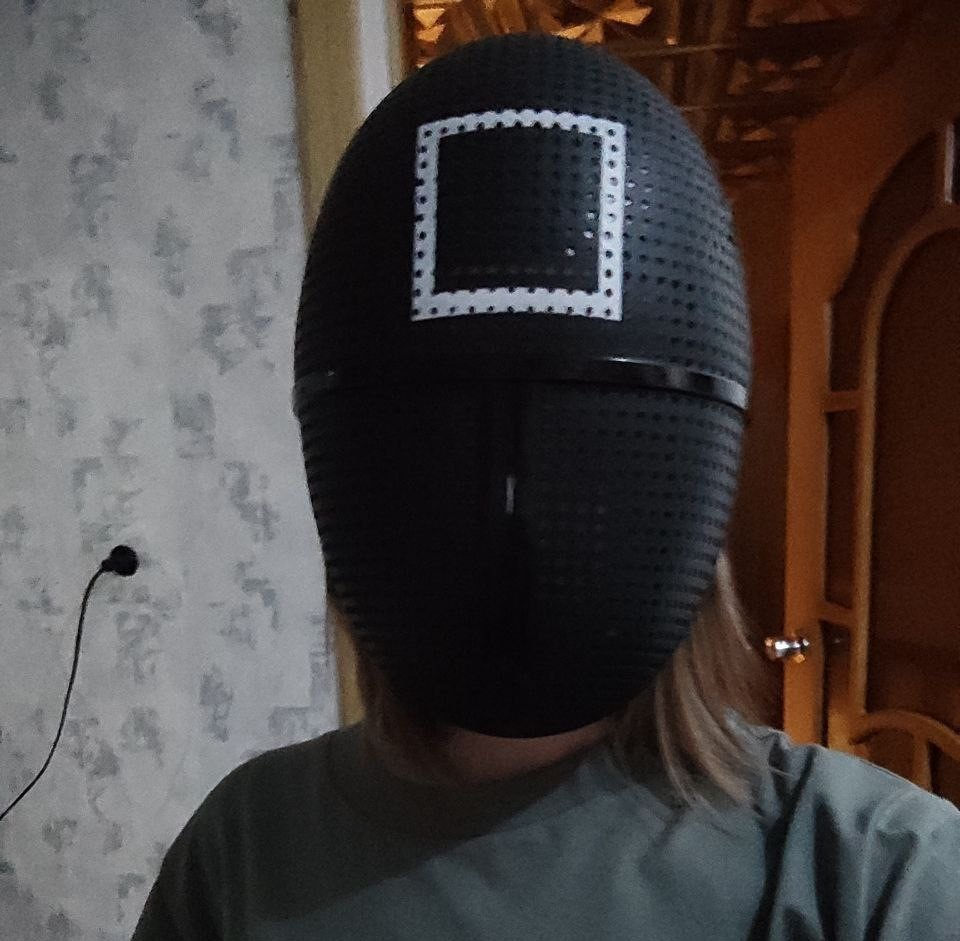

Министерство ообразования Свердловской области
ГАПОУ СО "ЕКТС"
Сагутдинова Илона Ильнаровна
Информационные системы и программирование
Группа: ПР-31
Информационные системы и программирование
Группа: ПР-31
Стремлюсь стать востребованным специалистом
Перечень общих (ОК), профессиональных (ПК) и дополнительных профессиональных (ДПК) компетенций по специальности 09.02.07 "Информационные системы и программирование":
kjadsja
Он тут будет
Он тут будет